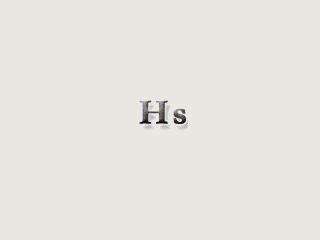

시놉시스
휴전 무렵 끊겨 버린 세계의 기록을 로스트사가라 부른다.
수억 년 동안 천계의 천사와 마계의 몬스터가 싸웠다. 빛의 여신 루시리스와 마왕 카오스가 휴전을 맺으면서 지상은 빛이, 마계는 어둠이 맡게 되었다.
인간은 신대륙에 첫 도시 크리엔드를 세웠다. 크리엔드Ⅳ세의 폭정이 이어지자 혁명장군 카르티나하가 반란을 일으켰고, 난을 피한 사람들은 그랜드마운틴을 넘어 로저스국을 세웠다.
그리고 지금, 휴전이 끝나 가고 있다. 마계의 저주받은 자들이 깨어나기 시작했다.
신에게 선택받은 자를 초즌이라 부른다.
당신은 태초의산에서 초즌으로 태어난다.

-
파트1~4
초즌의 길
로그오브랜드에서 출발해 크리엔드의 내전, 로저스국의 4대 마왕과 카오스, 마스터의 시련까지.
-
파트5 에피소드1~2
로스트사가
칠리마을 마법사 길드장 아스트리아가 끊긴 기록 이야기를 꺼낸다. 카오스의 부하 쉐도우는 마석의 조각을 모으고 있다.
-
파트5 에피소드3
자유의 신
대천사 라그엘이 칠리마을에 내려오고, 얼음성에서 망령이 쏟아져 나온다. 메인 스토리의 마지막 에피소드.